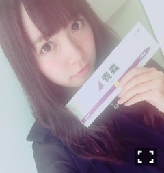
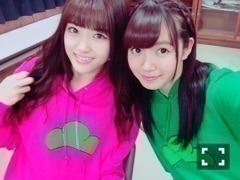
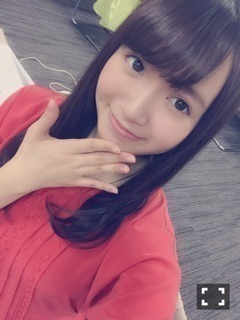

| 2016/05 02 Mon | ひめたん-0o0-その623 |
金土は名古屋で握手会でした！
遊びに来てくださった皆さん
ありがとうございました(^o^)
お留守番チームの皆さんへご報告～
◯全国握手会
ライブではやっと「不等号」
フルメンバーで披露できました！！
乃木中のスタジオライブを除いて、
というかライブで全員揃ったのは初！！
フルメンバーでフル尺歌えた！！
19人揃って初めて伝えられる
迫力とか、シンクロ性とか、声量もそう、
誰一人欠けても成立しないものなんだよね。
めちゃめちゃ嬉しかったです、
ステージ上で一人で感動してました( ˆωˆ )
握手会はろってぃーとペアでした！
ろってぃーファンの皆さん
お世話になりました( ˇωˇ )
ひめたんに会いに来てくれた皆さん
もちろん嬉しかったです！心強い♡
初めましての方が
たくさんいらっしゃって嬉しいです
新たな出会いに感謝。
お久しぶりの方も
関東に来てくれた半月ぶりの方も
東北ライブに来てくれたばかりの方も
皆さんありがとうございました！！
◯個別握手会
1部 ツインテール
5部 ポニーテール

らじらーで着てた彼パーカー
2部 巻き下ろし
3部 ハーフツイン風ねじねじ

スカートが見えませんね( ´ ･ω･ ` )
名古屋ということで
BOMBER-E Pナイトの時のお洋服でした。
あ、青森シールゲットしたよ！
4部 三つ編みハーフアップ
こちら写真がありません( >_< )
スカートはそのまま、トップスは
ピンクのガーリーなやつ着てました
はい、伝わらないですね
来てくれた方の特権。
2日間とも
喉の調子が良くなくて
ウィスパーな感じになってしまいました。
聞き取り辛かったりしたかな？
気を遣わせてしまってごめんなさい( >_< )
雑誌・テレビ・ラジオの感想
たくさん聞けて嬉しかったです！
BOMBER-Eのお話や
セミナー参加したよ！という報告は
名古屋ならではだったかな。
2日とも貼り紙してました
私の字の下に絵も貼ってたのですが
見ていただけましたか？
全握はあすかちゃん、
個握はマネージャーさん。
写真撮ってないので
来てくださった方限定ということで。
次は京都！声治しておきます！
日曜の夜は、らじらー！サンデー
ゲストは声優アーツに三森すずこさん
乃木坂からは星野みなみちゃんが
来てくれました！
声の調子が万全ではなかったので
聞き取りづらいなーと思った皆さん
ごめんなさい( >_< )
オリラジさんと3人で
お送りする時間が増えて、
いろんなお話ができて楽しいです！
RAPありがとうございました！
みなみちゃんは夜の生放送
初めてだったということで
ずっと緊張してたみたいですが
可愛かったですね(´,,•ω•,,｀)
是非また来てほしいです♡
次回の乃木坂回は
若月佑美ちゃんの登場です！
～お知らせ～
5/5 発掘！お宝ガレリア
5/8 BOMB
5/10 月刊Newtype

NHK総合 19:30～19:58
「発掘！お宝ガレリア」
北野と2人でキュレーターをしています
ゴールデンウィーク真っ最中ですね
観て下さい～( ˆωˆ )

月刊Newtypeさんで
連載がスタートします！！
何ということでしょう！！
「Nogizaka Newtype」のコーナーで
アニメ好きのメンバーが登場します。初回は
生駒・松村・佐々木・鈴木・中元が登場！
ありがとうございます！
ありがとうございます！
皆さん是非見てみて下さいませ。

2ndアルバム「それぞれの椅子」
私は赤衣装～
特典が発表されましたね
マネージャーさんも大活躍の今作、
楽曲はもちろんですが
イベントも楽しみにしていただけたらなと。
握手会は全会場5部参加します！
わーい！お待ちしてます(^o^)
あっという間に5月ですね
世間はゴールデンウィーク真っ最中ですが
皆さんいかがお過ごしですか？
私、静かなところに行きたいな～と
思ってたんだけれど
帰省されてる方が多いのかな、今の東京も
静かでなんだか落ち着きます。
(＊´・ω・＊)
コメント(696)
2016/05/02 23:30